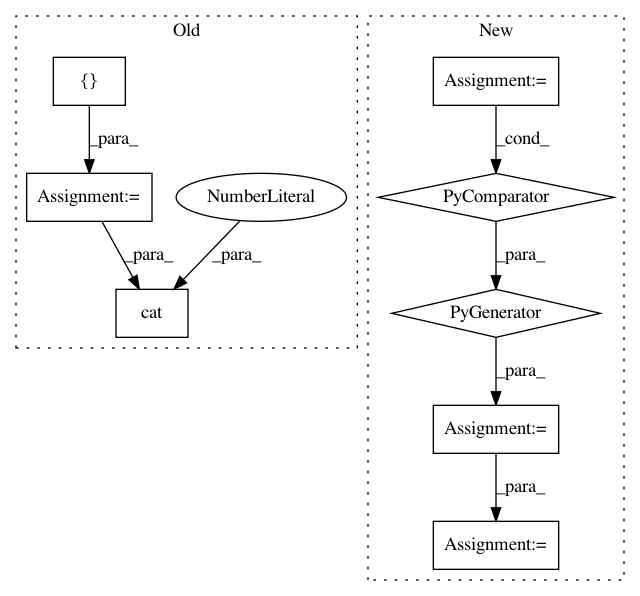

685126644ae540be72eb662527269a0395e2c9eb,onmt/IO.py,,make_features,#Any#Any#,59
Before Change
def make_features(batch, fields):
// TODO: This is bit hacky, add to batch somehow.
f = ONMTDataset.collect_features(fields)
cat = [batch.src[0]] + [batch.__dict__[k] for k in f]
cat = [c.unsqueeze(2) for c in cat]
return torch.cat(cat, 2)
def join_dicts(*args):
After Change
else:
data = batch.__dict__[side]
feat_start = side + "_feat_"
features = sorted(batch.__dict__[k]
for k in batch.__dict__ if feat_start in k)
levels = [data] + features
return torch.cat([level.unsqueeze(2) for level in levels], 2)
def join_dicts(*args):
In pattern: SUPERPATTERN
Frequency: 3
Non-data size: 8
Instances
Project Name: OpenNMT/OpenNMT-py
Commit Name: 685126644ae540be72eb662527269a0395e2c9eb
Time: 2017-09-05
Author: bpeters@coli.uni-saarland.de
File Name: onmt/IO.py
Class Name:
Method Name: make_features
Project Name: mariogeiger/se3cnn
Commit Name: aa7c004df5c781fc3b5b8131d7a9e64fd196203e
Time: 2018-05-26
Author: geiger.mario@gmail.com
File Name: se3_cnn/blocks/gated_block.py
Class Name: GatedBlock
Method Name: forward
Project Name: mariogeiger/se3cnn
Commit Name: 65f5a9006cf5e7e8daef6187e7987d7792f0feb6
Time: 2018-06-12
Author: geiger.mario@gmail.com
File Name: se3_cnn/non_linearities/gated_activation.py
Class Name: GatedActivation
Method Name: forward